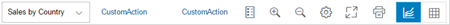
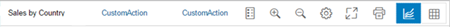

Chart Container
The ChartContainer control contains a toolbar and the control of the content aggregation displayed under the toolbar.
Overview
The ChartContainer supports the sap.viz.ui5.controls.VizFrame and sap.m.Table controls in its content area. With the toolbar, you can change the view of the content in different ways.
For more information about the VizFrame control, see the API Reference in the Demo Kit.
Details
-
Selection boxes in the toolbar
The control supports multiple selection boxes in the toolbar for changing dimensions, for example.
-
Content
You can switch between chart types or between a chart and a table view. ChartContainer supports different chart and table controls, for example, vizFrame and sap.m.Table. The sap.suite.ui.commons.ChartContainerContent control is a wrapper control for the content to be displayed in the ChartContainer control. You need to provide the title and icon properties in this control when you define the content so that it is displayed in the ChartContainer control.
-
Fullscreen mode
A fullscreen toggle button is provided in the toolbar. You can switch between fullscreen and normal mode.
-
Personalization
The control provides a personalization icon. If you press the icon, a personalization event will be fired.
-
Selection details
The Details button provides a popover that displays the details of the items selected in the chart. You can include the button into the toolbar by setting the showSelectionDetails property to true. Please note that SelectionDetails is only available when sap.viz.ui5.controls.VizFrame is displayed in ChartContainer.
-
Custom toolbar
As an app developer, you can create your own toolbar inside a ChartContainer control in your application. To configure a custom toolbar, the toolbar aggregation can be set to the sap.m.OverflowToolbar control that contains your preferred SAPUI5 controls. The new sap.suite.ui.commons.ChartContainerToolbarPlaceholder type has been introduced to make the position of the embedded buttons configurable. To configure the position of the embedded buttons, you need to set the placeholder element to the required position in the aggregation.
The order of the embedded buttons is set automatically by the control as shown in the image below:-
legend, zoom in, zoom out, personalization, full screen, custom icons and segmented button for content selection.
 -
If a dimension selector is displayed in the chart container, it will always be displayed in the first position in the toolbar. When a dimension selector is not visible, the chart container’s title (title property of ChartContainer) will be displayed in the first position in the toolbar as shown below.

-
-
Custom Icons
You can also use custom icons. In this case, custom icons are rendered as OverflowToolbar buttons. But they offer less options as the custom toolbar, for example, there is no control option for the visibility.